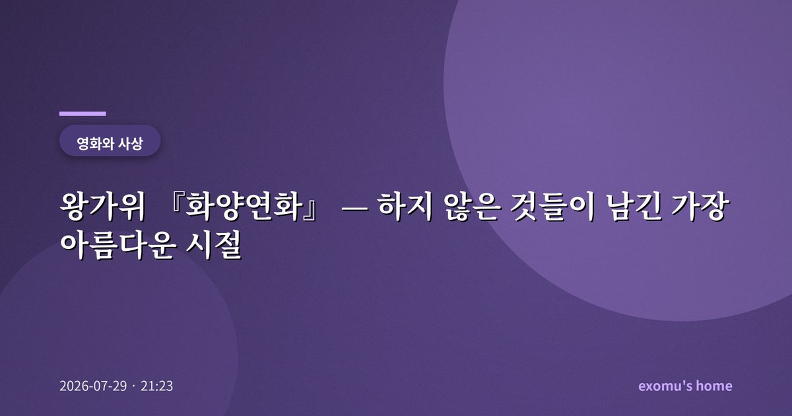
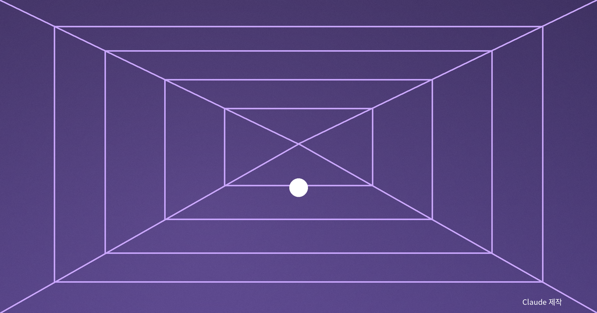
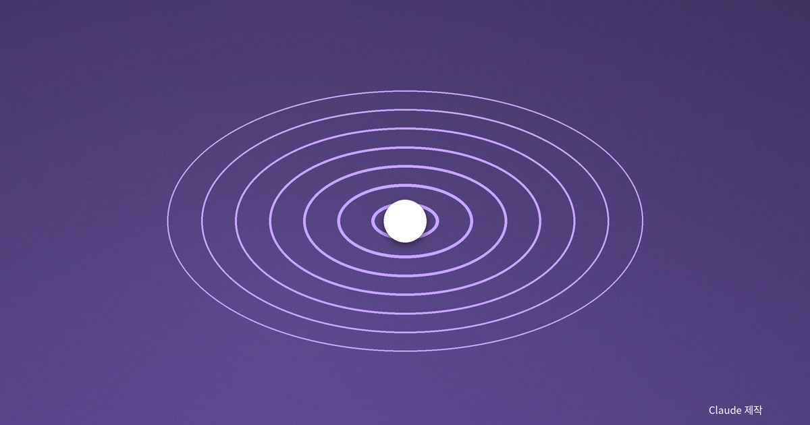
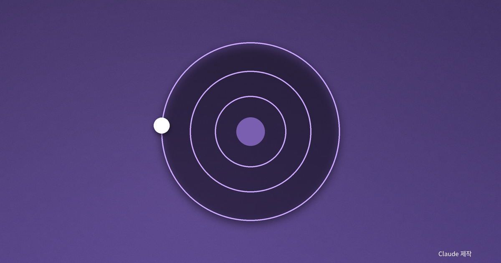
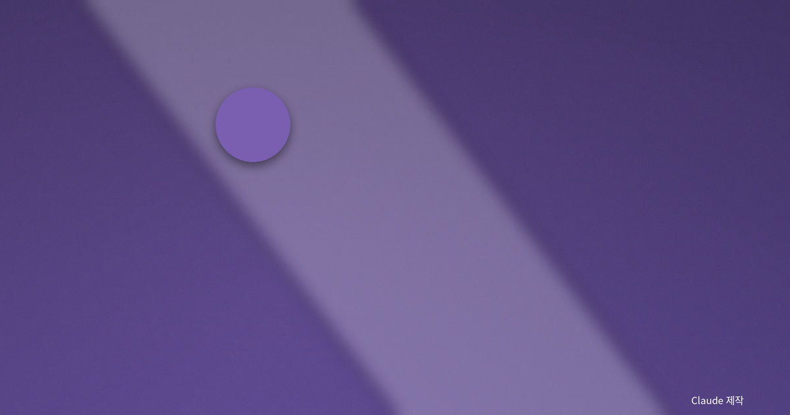

왕가위 『화양연화』 — 하지 않은 것들이 남긴 가장 아름다운 시절

좁은 복도에서 스치는 두 사람
『화양연화』를 처음 봤을 때, 나는 줄거리가 거의 없다는 사실에 당황했다. 1960년대 홍콩, 옆집에 이사 온 두 남녀가 각자의 배우자가 바람을 피우고 있다는 사실을 알게 된다. 그리고… 거의 아무 일도 일어나지 않는다. 좁은 복도에서 스치고, 국수를 사러 가는 길에 마주치고, 서로의 마음을 짐작하면서도 끝내 선을 넘지 않는다. 그런데 이상하게도 이 '아무 일 없음'이 오래도록 마음에 남았다.
나는 이 영화가 사랑에 관한 이야기가 아니라 '하지 않은 것들'에 관한 이야기라고 생각한다. 우리는 흔히 우리가 한 일들로 삶을 기억한다고 믿지만, 실은 하지 못한 말과 넘지 못한 문턱이 더 오래 우리를 붙잡는다.

하지 않은 것들의 무게
두 사람은 배우자들이 나눴을 대화를 상상하며 그 장면을 연기해 본다. 상대의 배신을 이해해 보려는 이 놀이는, 역설적으로 두 사람을 점점 더 가깝게 만든다. 그러나 그들은 끝내 "우리는 그들과 다르다"며 멈춘다. 절제는 여기서 억압이 아니라 하나의 윤리처럼 보인다. 넘지 않았기 때문에 그 감정은 닳지 않고 온전히 보존된다.
나는 이 대목에서 자유에 대한 물음을 떠올린다. 무엇이든 할 수 있는 것이 자유일까, 아니면 할 수 있음에도 하지 않기를 선택하는 것이 자유일까. 영화는 후자의 손을 들어 준다. 하지 않음으로써 지켜지는 것들이 있다.
흥미로운 것은 이 절제가 답답함이 아니라 팽팽한 긴장으로 다가온다는 점이다. 두 사람 사이의 공기는 늘 팽팽하지만 끝내 터지지 않는다. 왕가위는 그 긴장을 좁은 골목과 흔들리는 커튼, 담배 연기와 느린 걸음 같은 이미지로 대신 말한다. 대사로 설명하지 않고 분위기로 감정을 전하는 이 방식이야말로, 나는 이 영화의 가장 큰 힘이라고 생각한다.

시간은 왜 아름다운가
제목 '화양연화(花樣年華)'는 인생에서 꽃처럼 가장 아름다운 시절을 뜻한다. 흥미로운 것은, 그 시절이 아름다운 이유가 그것이 이미 지나갔기 때문이라는 점이다. 왕가위는 느린 슬로 모션과 반복되는 음악, 붉은 커튼과 좁은 골목으로 시간을 늘였다 줄였다 한다. 현재는 결코 자신이 화양연화인 줄 모른다. 오직 뒤돌아볼 때에야 그 시절은 꽃으로 피어난다.
이 영화가 시간을 다루는 방식은 우리에게 서늘한 질문을 남긴다. 지금 내가 대수롭지 않게 흘려보내는 이 하루가, 훗날 돌아보면 나의 화양연화는 아닐까. 아름다움은 늘 한발 늦게 도착한다.
그래서 이 영화를 보고 나면 우리는 저마다 자기 삶의 어떤 순간들을 다시 떠올리게 된다. 그때는 대수롭지 않았던 만남, 무심코 지나친 골목, 끝내 하지 못한 말들. 시간이 지나 그것들이 어떤 무게로 되돌아오는지를, 영화는 굳이 설명하지 않고도 관객이 스스로 느끼게 한다. 좋은 예술은 답을 주는 대신 질문을 오래 품게 만든다.

기억이라는 방
영화의 끝에서 남자는 캄보디아의 오래된 사원 앙코르와트로 가, 돌담의 구멍에 대고 비밀을 속삭인 뒤 흙으로 막는다. 말해질 수 없었던 마음을 그렇게 봉인하는 것이다. 나는 이 장면이 기억이란 무엇인지를 가장 아름답게 보여 준다고 느낀다. 기억은 지나간 사실의 기록이 아니라, 하지 못한 말들을 넣어 두는 방이다. 그 방은 시간이 지날수록 오히려 더 선명해진다.

나의 화양연화는 언제였나
영화를 다 보고 나면 이상한 그리움이 남는다. 겪지도 않은 시절이 그리운 것이다. 아마도 그것은 영화가 우리 각자의 '하지 못한 것들'을 건드리기 때문일 것이다. 나는 이 영화를 볼 때마다, 넘지 않아서 지켜진 것과 넘지 못해서 잃은 것 사이에서 오래 머문다. 그리고 지금 이 순간이 훗날의 화양연화일지도 모른다는 생각에, 흘러가는 하루를 조금은 더 다정하게 바라보게 된다. 어쩌면 화양연화란 특정한 시절의 이름이 아니라, 지금을 소중히 여길 줄 아는 마음의 다른 이름일지도 모른다.